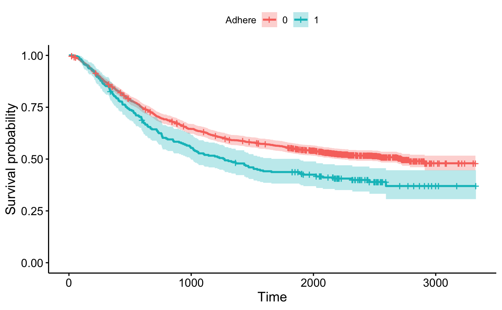

ggsurvplot_df.RdAn extension to ggsurvplot() to plot survival curves from any data frame containing the summary of survival curves as returned the surv_summary() function.
Might be useful for a user who wants to use ggsurvplot for visualizing survival curves computed by another method than the standard survfit.formula function. In this case, the user has just to provide the data frame containing the summary of the survival analysis.
ggsurvplot_df(fit, fun = NULL, color = NULL, palette = NULL, linetype = 1, break.x.by = NULL, break.time.by = NULL, break.y.by = NULL, surv.scale = c("default", "percent"), surv.geom = geom_step, xscale = 1, conf.int = FALSE, conf.int.fill = "gray", conf.int.style = "ribbon", conf.int.alpha = 0.3, censor = TRUE, censor.shape = "+", censor.size = 4.5, title = NULL, xlab = "Time", ylab = "Survival probability", xlim = NULL, ylim = NULL, axes.offset = TRUE, legend = c("top", "bottom", "left", "right", "none"), legend.title = "Strata", legend.labs = NULL, ggtheme = theme_survminer(), ...)
| fit | a data frame as returned by surv_summary. Should contains at least the following columns:
|
|---|---|
| fun | an arbitrary function defining a transformation of the survival curve. Often used transformations can be specified with a character argument: "event" plots cumulative events (f(y) = 1-y), "cumhaz" plots the cumulative hazard function (f(y) = -log(y)), and "pct" for survival probability in percentage. |
| color | color to be used for the survival curves.
|
| palette | the color palette to be used. Allowed values include "hue" for the default hue color scale; "grey" for grey color palettes; brewer palettes e.g. "RdBu", "Blues", ...; or custom color palette e.g. c("blue", "red"); and scientific journal palettes from ggsci R package, e.g.: "npg", "aaas", "lancet", "jco", "ucscgb", "uchicago", "simpsons" and "rickandmorty". See details section for more information. Can be also a numeric vector of length(groups); in this case a basic color palette is created using the function palette. |
| linetype | line types. Allowed values includes i) "strata" for changing linetypes by strata (i.e. groups); ii) a numeric vector (e.g., c(1, 2)) or a character vector c("solid", "dashed"). |
| break.x.by | alias of break.time.by. Numeric value controlling x axis breaks. Default value is NULL. |
| break.time.by | numeric value controlling time axis breaks. Default value is NULL. |
| break.y.by | same as break.x.by but for y axis. |
| surv.scale | scale transformation of survival curves. Allowed values are "default" or "percent". |
| surv.geom | survival curve style. Is the survival curve entered a step function (geom_step) or a smooth function (geom_line). |
| xscale | numeric or character value specifying x-axis scale.
|
| conf.int | logical value. If TRUE, plots confidence interval. |
| conf.int.fill | fill color to be used for confidence interval. |
| conf.int.style | confidence interval style. Allowed values include c("ribbon", "step"). |
| conf.int.alpha | numeric value specifying fill color transparency. Value should be in [0, 1], where 0 is full transparency and 1 is no transparency. |
| censor | logical value. If TRUE, censors will be drawn. |
| censor.shape | character or numeric value specifying the point shape of censors. Default value is "+" (3), a sensible choice is "|" (124). |
| censor.size | numveric value specifying the point size of censors. Default is 4.5. |
| title | main title and axis labels |
| xlab | main title and axis labels |
| ylab | main title and axis labels |
| xlim | x and y axis limits e.g. xlim = c(0, 1000), ylim = c(0, 1). |
| ylim | x and y axis limits e.g. xlim = c(0, 1000), ylim = c(0, 1). |
| axes.offset | logical value. Default is TRUE. If FALSE, set the plot axes to start at the origin. |
| legend | character specifying legend position. Allowed values are one of c("top", "bottom", "left", "right", "none"). Default is "top" side position. to remove the legend use legend = "none". Legend position can be also specified using a numeric vector c(x, y); see details section. |
| legend.title | legend title. |
| legend.labs | character vector specifying legend labels. Used to replace the names of the strata from the fit. Should be given in the same order as those strata. |
| ggtheme | function, ggplot2 theme name. Default value is
theme_survminer. Allowed values include ggplot2 official themes: see
|
| ... | other arguments to be passed i) to ggplot2 geom_*() functions such as linetype, size, ii) or to the function ggpar() for customizing the plots. See details section. |
library(survival) # Fit survival curves #:::::::::::::::::::::::::::::::::::::::::::::::::::::::: fit1 <- survfit( Surv(time, status) ~ 1, data = colon) fit2 <- survfit( Surv(time, status) ~ adhere, data = colon) # Summary #:::::::::::::::::::::::::::::::::::::::::::::::::::::::: head(surv_summary(fit1, colon))#> time n.risk n.event n.censor surv std.err upper lower #> 1 8 1858 1 0 0.9994618 0.0005383580 1.0000000 0.9984077 #> 2 9 1857 1 0 0.9989236 0.0007615583 1.0000000 0.9974337 #> 3 19 1856 1 0 0.9983854 0.0009329660 1.0000000 0.9965614 #> 4 20 1855 1 0 0.9978471 0.0010775868 0.9999569 0.9957419 #> 5 23 1854 1 1 0.9973089 0.0012051037 0.9996673 0.9949561 #> 6 24 1852 1 1 0.9967704 0.0013206006 0.9993537 0.9941938#> time n.risk n.event n.censor surv std.err upper lower #> 1 8 1588 1 0 0.9993703 0.0006299213 1.0000000 0.9981372 #> 2 9 1587 1 0 0.9987406 0.0008911240 1.0000000 0.9969977 #> 3 19 1586 1 0 0.9981108 0.0010917438 1.0000000 0.9959774 #> 4 20 1585 1 0 0.9974811 0.0012610351 0.9999495 0.9950188 #> 5 23 1584 1 1 0.9968514 0.0014103253 0.9996107 0.9940997 #> 6 24 1582 1 1 0.9962213 0.0015455856 0.9992437 0.9932080 #> strata adhere #> 1 adhere=0 0 #> 2 adhere=0 0 #> 3 adhere=0 0 #> 4 adhere=0 0 #> 5 adhere=0 0 #> 6 adhere=0 0# Visualize #:::::::::::::::::::::::::::::::::::::::::::::::::::::::: ggsurvplot_df(surv_summary(fit1, colon))ggsurvplot_df(surv_summary(fit2, colon), conf.int = TRUE, legend.title = "Adhere", legend.labs = c("0", "1"))# Kaplan-Meier estimate #:::::::::::::::::::::::::::::::::::::::::::::::::::::::: out_km <- survfit(Surv(time, status) ~ 1, data = lung) # Weibull model #:::::::::::::::::::::::::::::::::::::::::::::::::::::::: wb <- survreg(Surv(time, status) ~ 1, data = lung) s <- seq(.01, .99, by = .01) t <- predict(wb, type = "quantile", p = s, newdata = lung[1, ]) out_wb <- data.frame(time = t, surv = 1 - s, upper = NA, lower = NA, std.err = NA) # plot both #:::::::::::::::::::::::::::::::::::::::::::::::::::::::: p_km <- ggsurvplot(out_km, conf.int = FALSE) p_wb <- ggsurvplot(out_wb, conf.int = FALSE, surv.geom = geom_line) p_kmp_wbp_km$plot + geom_line(data = out_wb, aes(x = time, y = surv))